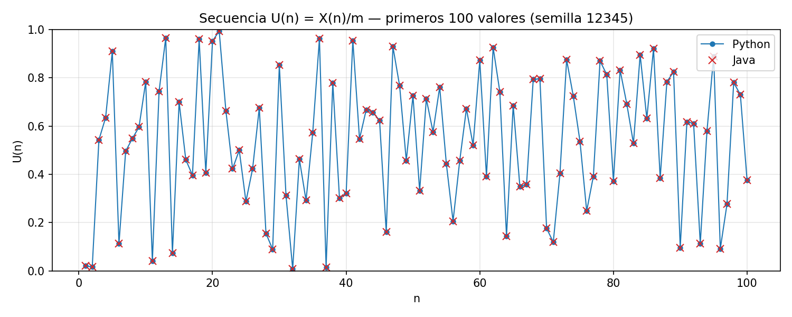
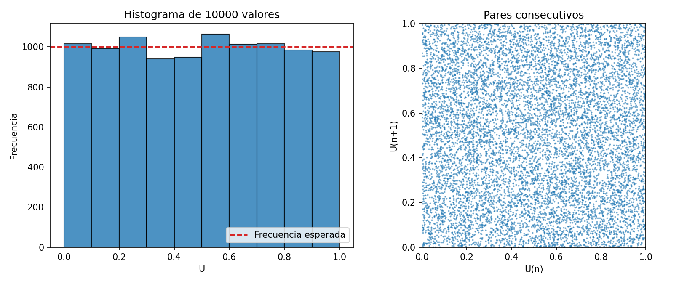
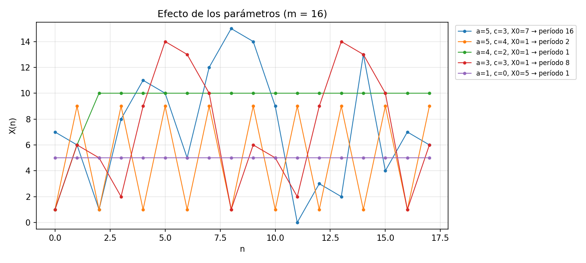
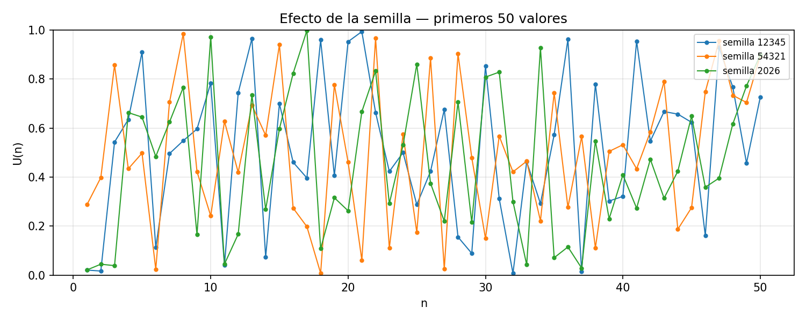

|
FEIRNNR - Carrera de Computación
| ||||||||||||||||||||||||||||||||||||||||||||||||||||||||||||||||||||||||||||||||||||||||||||||||||||||||||||||||||||||||||||||||||||||||||||||||||||||||||||||||||||||||||||||||||||||||||||||||||||||||||||||||||||||||||||||||||||||||||||||||||||
Reporte Técnico de Actividades
|
| Nombre del estudiante(s) | Ivett Anahi Zaragocin Mora |
| Asignatura | Simulación |
| Ciclo | 5 |
| Unidad | U2: Generación de números pseudoaleatorios y generación de variables aleatorias |
| Resultado de aprendizaje de la unidad | R2. Interpreta los resultados de una Simulación, bajo los principios de solidaridad, transparencia, responsabilidad y honestidad. |
| Práctica Nro. | 05 |
| Título de la Práctica | Implementación y análisis del Generador Congruencial Lineal en Python y Java |
| Nombre del Docente | José Oswaldo Guamán Quinche |
| Fecha | 29 y 30 de octubre de 2026 |
| Horario | Jueves 10h30 a 11h30 · Viernes 07h30 a 09h30 |
| Lugar | Aula |
| Tiempo planificado en el Sílabo | 3 horas |
Objetivo general: comprender el funcionamiento de un generador pseudoaleatorio mediante la implementación del método LCG.
Objetivos específicos:
Una simulación estocástica necesita números aleatorios uniformes en [0, 1), a partir de los cuales se generan las demás variables aleatorias [1], [2]. Los computadores no producen azar verdadero: usan algoritmos deterministas que, a partir de un valor inicial llamado semilla, producen una secuencia que parece aleatoria y supera pruebas estadísticas de uniformidad e independencia. Por eso se llaman pseudoaleatorios [3].
Propuesto por Lehmer [4], es el generador más conocido. Usa la relación recursiva:
Xn+1 = (a · Xn + c) mod m, Un = Xn / m
donde a es el multiplicador, c el incremento, m el módulo y X0 la semilla. Como Xn solo puede tomar valores entre 0 y m − 1, la secuencia se repite tarde o temprano. Los parámetros de la guía (a = 1664525, c = 1013904223, m = 232) son los recomendados en Numerical Recipes [5].
El período es la cantidad de valores distintos que se generan antes de que la secuencia se repita. Su valor máximo es m. Hull y Dobell demostraron que un LCG con c ≠ 0 alcanza el período completo para cualquier semilla si y solo si [6]:
Cuando m es una potencia de 2, el bit k menos significativo de Xn tiene un período de solo 2k; el último bit simplemente alterna. Además, los puntos (Un, Un+1, …) caen sobre un número finito de hiperplanos [7]. Por estas limitaciones el LCG sirve para fines didácticos y simulaciones sencillas, pero no para criptografía [3], [8].
Un buen generador debe producir valores uniformes (media 0.5 y varianza 1/12 ≈ 0.0833) e independientes [1], [2]. La uniformidad se contrasta con la prueba chi-cuadrado: con 10 intervalos y α = 0.05, se acepta si χ² < 16.919. La independencia se estima con la autocorrelación de retardo 1, que debe ser cercana a 0.
LCG en model.py, con los métodos next_int(), next_float() y generate(n). Python usa enteros de precisión arbitraria, así que (a*x + c) % m se calcula sin desbordamiento. Se generaron 10 000 valores.Lcg en java/Lcg.java. Como Java no tiene enteros sin signo de 32 bits, se usó long (64 bits): a·X < 221·232 = 253, por lo que el producto cabe sin desbordarse, y mod 232 se calcula con la máscara & 0xFFFFFFFF. Main.java guarda los valores en un CSV y, en modo periodo, recorre el ciclo completo.main.py compila y ejecuta Java, lee su CSV y compara valor a valor con Python. Se armó la tabla de las primeras 20 observaciones.unittest, entre ellas una que compara Python y Java con las semillas 0, 12345 y 232 − 1.| n | Xn Python | Xn Java | Un Python | Un Java | ¿Igual? |
|---|---|---|---|---|---|
| 1 | 87628868 | 87628868 | 0.0204026857 | 0.0204026857 | Sí |
| 2 | 71072467 | 71072467 | 0.0165478482 | 0.0165478482 | Sí |
| 3 | 2332836374 | 2332836374 | 0.5431557945 | 0.5431557945 | Sí |
| 4 | 2726892157 | 2726892157 | 0.6349040561 | 0.6349040561 | Sí |
| 5 | 3908547000 | 3908547000 | 0.9100295138 | 0.9100295138 | Sí |
| 6 | 483019191 | 483019191 | 0.1124616691 | 0.1124616691 | Sí |
| 7 | 2129828778 | 2129828778 | 0.4958894053 | 0.4958894053 | Sí |
| 8 | 2355140353 | 2355140353 | 0.5483488443 | 0.5483488443 | Sí |
| 9 | 2560230508 | 2560230508 | 0.5961001171 | 0.5961001171 | Sí |
| 10 | 3364893915 | 3364893915 | 0.7834504161 | 0.7834504161 | Sí |
| 11 | 171172990 | 171172990 | 0.0398543174 | 0.0398543174 | Sí |
| 12 | 3194601925 | 3194601925 | 0.7438012224 | 0.7438012224 | Sí |
| 13 | 4148119648 | 4148119648 | 0.9658093676 | 0.9658093676 | Sí |
| 14 | 316399679 | 316399679 | 0.0736675409 | 0.0736675409 | Sí |
| 15 | 3004788882 | 3004788882 | 0.6996069294 | 0.6996069294 | Sí |
| 16 | 1976948425 | 1976948425 | 0.4602941743 | 0.4602941743 | Sí |
| 17 | 1702883732 | 1702883732 | 0.3964835154 | 0.3964835154 | Sí |
| 18 | 4121112547 | 4121112547 | 0.9595212869 | 0.9595212869 | Sí |
| 19 | 1744294886 | 1744294886 | 0.4061253010 | 0.4061253010 | Sí |
| 20 | 4092090893 | 4092090893 | 0.9527641565 | 0.9527641565 | Sí |
Ambas implementaciones producen exactamente la misma secuencia. El primer valor se puede verificar a mano: (1664525 · 12345 + 1013904223) mod 232 = 21 562 465 348 − 5 · 4 294 967 296 = 87 628 868, y U1 = 87 628 868 / 232 = 0.0204026857. Al comparar los 10 000 valores de cada semilla, coincidieron los 10 000 en las tres semillas probadas.


Los valores saltan por todo el intervalo [0, 1) sin un patrón visible. El histograma es casi plano alrededor de la frecuencia esperada (1000 por intervalo) y los pares consecutivos llenan el cuadrado de forma pareja. Con 10 000 puntos no se distinguen los hiperplanos de Marsaglia, porque con m = 232 están muy juntos [7].
| Condición de Hull-Dobell | Verificación | ¿Cumple? |
|---|---|---|
| mcd(c, m) = 1 | c es impar y m = 232 | Sí |
| a − 1 divisible por los primos de m | 1664524 / 2 = 832262 | Sí |
| 4 | m ⇒ 4 | (a − 1) | 1664524 / 4 = 416131 | Sí |
Como se cumplen las tres condiciones, el período teórico es m = 232 = 4 294 967 296. El programa en Java recorrió el ciclo completo desde la semilla 12345 y volvió a ella después de exactamente 4 294 967 296 pasos, lo que confirma el teorema. Sin embargo, los bits bajos tienen períodos mucho más cortos:
| Bits menos significativos (k) | 1 | 2 | 3 | 4 | 5 | 6 | 7 | 8 |
|---|---|---|---|---|---|---|---|---|
| Período de Xn mod 2k | 2 | 4 | 8 | 16 | 32 | 64 | 128 | 256 |
Por ejemplo, Xn alterna entre par e impar (87628868, 71072467, 2332836374, 2726892157, …). Por eso conviene usar Un (que depende de los bits altos) y no Xn mod k para generar enteros pequeños [3].

| a | c | X0 | Hull-Dobell | Período | Secuencia |
|---|---|---|---|---|---|
| 5 | 3 | 7 | Sí | 16 | 7, 6, 1, 8, 11, 10, 5, 12, 15, 14, … |
| 3 | 3 | 1 | No (a − 1 no es múltiplo de 4) | 8 | 1, 6, 5, 2, 9, 14, 13, 10, 1, 6, … |
| 5 | 4 | 1 | No (c par) | 2 | 1, 9, 1, 9, … |
| 4 | 2 | 1 | No (a par) | 1 | 1, 6, 10, 10, 10, … |
| 1 | 0 | 5 | No | 1 | 5, 5, 5, … |
Con parámetros que cumplen Hull-Dobell se recorren los 16 valores posibles. Si se incumple una sola condición, el período cae a la mitad (8), a 2 o incluso a 1, y la secuencia deja de ser útil.

| Semilla | U1 | Media | Varianza | χ² (crítico 16.919) | Autocorrelación r(1) | Python = Java |
|---|---|---|---|---|---|---|
| 12345 | 0.0204 | 0.4988 | 0.08302 | 14.16 | −0.0153 | 10 000 / 10 000 |
| 54321 | 0.2883 | 0.4989 | 0.08360 | 7.23 | −0.0020 | 10 000 / 10 000 |
| 2026 | 0.0212 | 0.4991 | 0.08451 | 7.52 | 0.0021 | 10 000 / 10 000 |
Cada semilla produce una secuencia distinta, pero con las mismas propiedades estadísticas: la media es cercana a 0.5, la varianza a 1/12 = 0.0833, las tres pasan la prueba chi-cuadrado y la autocorrelación es casi 0. Ningún valor se repite en los 10 000, como era de esperar con un período de 232. En los tres casos Python y Java vuelven a coincidir. En realidad, como el período es completo, todas las semillas recorren el mismo ciclo de 232 valores; la semilla solo elige el punto de partida.
¿Qué significa pseudoaleatorio?
Que los números parecen aleatorios, porque pasan pruebas de uniformidad e independencia, pero los produce un algoritmo determinista. Conociendo a, c, m y la semilla, la secuencia se puede predecir y repetir exactamente [3]. En esta práctica, Python y Java obtuvieron la misma secuencia justamente porque no hay azar real.
¿Qué función cumple la semilla?
Es el valor inicial X0 y determina toda la secuencia. Con la misma semilla se obtiene siempre la misma secuencia, lo que permite reproducir y verificar una simulación. Con otra semilla se obtiene otra secuencia (un punto de partida distinto del ciclo) con las mismas propiedades estadísticas (sección 6.5).
¿Qué significa período?
Es la cantidad de números distintos que genera el algoritmo antes de que la secuencia se repita. Su máximo es m. Con los parámetros de la guía el período es 232 = 4 294 967 296, verificado en Java. Una simulación debería usar muchos menos valores que el período.
¿Qué ocurre si se utilizan parámetros inadecuados?
El período se acorta y la secuencia se vuelve predecible o constante. Con m = 16: a par (a = 4) lleva a un valor fijo (período 1), c par (c = 4) produce solo 1, 9, 1, 9 (período 2) y a − 1 no múltiplo de 4 reduce el período a la mitad (8). Con a = 1 y c = 0 el número nunca cambia (sección 6.4).
¿Qué ventaja tiene implementar el mismo algoritmo en dos lenguajes?
Permite verificar la implementación: si dos programas independientes producen los mismos 10 000 valores, es muy poco probable que ambos tengan el mismo error [9]. Además, muestra detalles propios de cada lenguaje que pueden cambiar el resultado, como el desbordamiento de enteros en Java (que se resolvió con long y una máscara) o el formato decimal según la configuración regional. También garantiza que una simulación sea portable y reproducible en distintas plataformas.
long y una máscara, o Integer.toUnsignedLong, para evitar errores por desbordamiento de enteros con signo.[1] A. M. Law, Simulation Modeling and Analysis, 5th ed. New York, NY, USA: McGraw-Hill, 2015.
[2] J. Banks, J. S. Carson, B. L. Nelson y D. M. Nicol, Discrete-Event System Simulation, 5th ed. Upper Saddle River, NJ, USA: Pearson, 2010.
[3] D. E. Knuth, The Art of Computer Programming, Vol. 2: Seminumerical Algorithms, 3rd ed. Reading, MA, USA: Addison-Wesley, 1997.
[4] D. H. Lehmer, “Mathematical methods in large-scale computing units,” en Proc. 2nd Symp. on Large-Scale Digital Calculating Machinery, Cambridge, MA, USA: Harvard University Press, 1951, pp. 141–146.
[5] W. H. Press, S. A. Teukolsky, W. T. Vetterling y B. P. Flannery, Numerical Recipes: The Art of Scientific Computing, 3rd ed. Cambridge, U.K.: Cambridge University Press, 2007.
[6] T. E. Hull y A. R. Dobell, “Random number generators,” SIAM Review, vol. 4, no. 3, pp. 230–254, 1962.
[7] G. Marsaglia, “Random numbers fall mainly in the planes,” Proceedings of the National Academy of Sciences, vol. 61, no. 1, pp. 25–28, 1968.
[8] P. L’Ecuyer, “Tables of linear congruential generators of different sizes and good lattice structure,” Mathematics of Computation, vol. 68, no. 225, pp. 249–260, 1999.
[9] R. G. Sargent, “Verification and validation of simulation models,” Journal of Simulation, vol. 7, no. 1, pp. 12–24, 2013.
[10] J. D. Hunter, “Matplotlib: A 2D graphics environment,” Computing in Science & Engineering, vol. 9, no. 3, pp. 90–95, 2007.
[11] J. O. Guamán Quinche, “Diapositivas semana 5 – Generación de números pseudoaleatorios,” Universidad Nacional de Loja, 2026.
El código completo está en el repositorio github.com/ivecanahi/simulacion-practicas, carpeta Unidad2/practica05. Se ejecuta con:
pip install -r requirements.txt cd Unidad2/practica05 python3 main.py # Python + Java, comparación, gráficas y período python3 main.py --sin-periodo # omite el recorrido de 2^32 valores python3 -m unittest -v # pruebas
Generador en Python (model.py):
class LCG:
def __init__(self, seed=12345, a=1664525, c=1013904223, m=2**32):
self.a, self.c, self.m = a, c, m
self.state = seed
def next_int(self):
self.state = (self.a * self.state + self.c) % self.m
return self.state
def next_float(self):
return self.next_int() / self.m
Generador en Java (java/Lcg.java):
public final class Lcg {
public static final long A = 1664525L;
public static final long C = 1013904223L;
public static final long M = 1L << 32;
private static final long MASK = M - 1; // x mod 2^32 == x & (2^32 - 1)
private long state;
public Lcg(long seed) { this.state = seed; }
public long nextInt() {
state = (A * state + C) & MASK; // a·X < 2^53: no se desborda
return state;
}
public double nextFloat() { return (double) nextInt() / M; }
}
Semilla 12345: 10000/10000 valores idénticos entre Python y Java Semilla 54321: 10000/10000 valores idénticos entre Python y Java Semilla 2026: 10000/10000 valores idénticos entre Python y Java Teorema de Hull-Dobell (a, c, m de la guía): [✓] c y m son primos relativos [✓] a - 1 divisible por todo primo de m [✓] si 4 divide a m, 4 divide a a - 1 Período medido en Java: 4294967296 (= 2^32: True) Período de los k bits menos significativos: k=1: 2, k=2: 4, k=3: 8, k=4: 16, k=5: 32, k=6: 64, k=7: 128, k=8: 256
$ python3 -m unittest ................ ---------------------------------------------------------------------- Ran 16 tests OK